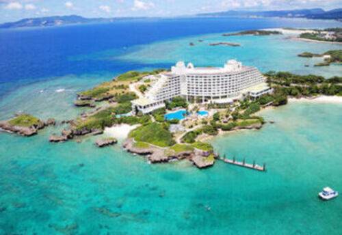
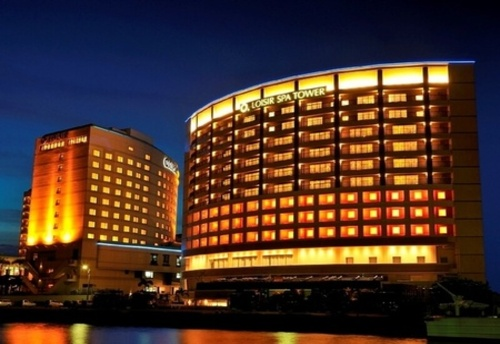
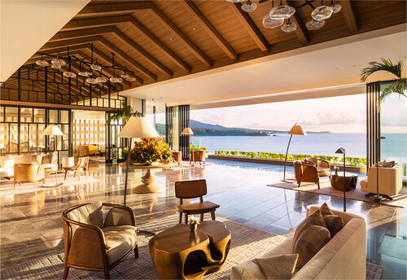

ANAインターコンチネンタル万座ビーチリゾート
沖縄で最大級のデスティネーションリゾート
景勝地・万座毛を対岸に望む「ANAインターコンチネンタル万座ビーチリゾート」は、沖縄初のデスティネーションリゾート。
幅広い旅のスタイルに応える客室は、南国リゾート感たっぷり。
「クラブインターコンチネンタルルーム」と「スイートルーム」に泊まると、“沖縄で最もラグジュアリー”を謳う「クラブインターコンチネンタルラウンジ」が利用でき、専属コンシェルジュが、ワンランク上の寛ぎを約束してくれる。
大人気のスパやグルメやマリンアクティビティも愉しんで、最高の沖縄時間を満喫しよう。
公式サイト
ホテルの楽しみ方
源泉かけ流し天然温泉と世界トップクラスの
スパ体験を
那覇空港から車で約7分、世界トップクラスのスパ施設や、源泉かけ流しの天然温泉、屋内外プールに加え、24時間利用可能なフィットネスジムを完備した、ベイサイドに浮かぶ至福のヒーリングリゾートです。お部屋は海、波、花、太陽と、部屋ごとに異なるテーマや色調があり、訪れる度に異なる印象を感じていただけます。全室バルコニー付きの客室で、特別な那覇ステイをお愉しみください。
公式サイト
ホテルの楽しみ方

ロワジール スパタワー 那覇

ハレクラニ沖縄
2019年オープン！
世界的に定評のあるラグジュアリーホテル
ハレクラニ沖縄」は沖縄本島の恩納村に位置するラグジュアリーなビーチリゾートです。周囲の地理的景観を生かして建設されたこのホテルは、沖縄海岸国定公園内の約8万7,000㎡におよぶ敷地面積と豊かな自然に囲まれ、全長約1.7㎞の海岸線沿いに面しています。ハレクラニ沖縄には、8つの飲食施設やバーをはじめ、スパハレクラニ、フィットネスジム、ラグジュアリーなブティック、 約200㎡の広さを持つ会議・コンベンションスペース、5つのスイミングプールなど、多彩な施設を備えています。
公式サイト
ホテルの楽しみ方